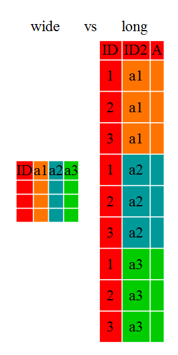

Reshaping Data Sets
Learning Goals
At the end of this lesson, you should:
- be able to convert a long data set to wide
- be able to convert a wide data set to long
- be aware of function used during
pivot_wide()to compress multiple observations for a variable combination being pivoted.
What is pivoting?
There are circumstances when a wide data set are needed and circumstances when a long data set are needed, for analysis, plotting, data wrangling, etc.
Doing this manually in a spreadsheet program is extremely cumbersome and very susceptible to errors! You are much better off doing this in R (or another programming language).
These wide-to-long and long-to-wide conversions are also called ‘pivoting’.
When pivoting from long to wide format, we should consider what will be used as the identifying information, what information will be used for column headers and what information will be used to fill the cells/populate the table.
When pivoting from wide to long, the considerations are similar: what will be the name of the new column header and what information (i.e. what columns) will be used to populate the data in the vertical direction, while which columns will be used for record identification.
Pivoting from wide to long can be done with the tidyr functions pivot_wide() and the reverse function if pivot_longer().
Let’s run some examples with trial data set.
Load the libraries and trial data:
library(dplyr); library(tidyr)
variety_trials <- read.csv(here::here("data", "trial_data.csv")) Pivot long to wide
The first thing we should do is look at the documentation for pivot_wider.
?pivot_widerThe main arguments to consider (not including the input data) is:
id_cols what are the identifying columns that we will keep in the data set to identify and separate records. This can be multiple columns.
names_from is the variable that will be used to make the new column header. This is the column that we are seeking to change from long to wide. This should be a categorical variable or one that can be coerced to one. Usually it contains repeating values.
values_from is the variable that will be used to fill the cells under the column header.
There is long list of other arguments, but these are the most important.
Pivot single variable
The loaded data set includes many different field trials. Let’s look at the information for one trial and pivot the data across replicates for a single variable, using entry as an ID variable.
First, find out the different levels for “trial”:
unique(variety_trials$trial) [1] "SWIdahoCereals_H_S_PAR_2018" "SWIdahoCereals_H_S_WEI_2018"
[3] "SWIdahoCereals_H_W_PAR_2017" "SWIdahoCereals_H_W_PAR_2018"
[5] "SWIdahoCereals_H_W_WEI_2018" "SWIdahoCereals_HRS_PAR_2016"
[7] "SWIdahoCereals_HRS_PAR_2017" "SWIdahoCereals_HRS_PAR_2019"
[9] "SWIdahoCereals_HRS_PAR_2020" "SWIdahoCereals_HRW_PAR_2019"
[11] "SWIdahoCereals_HRW_PAR_2020" "SWIdahoCereals_HWS_PAR_2016"
[13] "SWIdahoCereals_HWS_PAR_2017" "SWIdahoCereals_HWS_PAR_2019"
[15] "SWIdahoCereals_HWS_PAR_2020" "SWIdahoCereals_HWW_PAR_2019"
[17] "SWIdahoCereals_HWW_PAR_2020" "SWIdahoCereals_SWS_PAR_2016"
[19] "SWIdahoCereals_SWS_PAR_2017" "SWIdahoCereals_SWS_PAR_2018"
[21] "SWIdahoCereals_SWS_PAR_2019" "SWIdahoCereals_SWS_PAR_2020"
[23] "SWIdahoCereals_SWS_WEI_2018" "SWIdahoCereals_SWW_PAR_2017"
[25] "SWIdahoCereals_SWW_PAR_2018" "SWIdahoCereals_SWW_PAR_2019"
[27] "SWIdahoCereals_SWW_PAR_2020" "SWIdahoCereals_SWW_WEI_2018"This example will use the last trial listed (SWIdahoCereals_SWW_PAR_2020), but any of these options will work. Let’s filter the data and check that there is one observation per rep and entry.
parma2018 <- variety_trials %>% filter(trial == "SWIdahoCereals_H_S_PAR_2018")
table(parma2018$variety, parma2018$rep)
1 2 3 4
06PN3017-09 1 1 1 1
12SB0197 1 1 1 1
12SB0224 1 1 1 1
Alum 1 1 1 1
Dayn 1 1 1 1
Glee 1 1 1 1
IDO1602S 1 1 1 1
IDO1603S 1 1 1 1
IDO1604S 1 1 1 1
Jefferson 1 1 1 1
LCS Iron 1 1 1 1
LCS Luna 1 1 1 1
SY Coho 1 1 1 1
SY Gunsight 1 1 1 1
UI Platinum 1 1 1 1
WA828 1 1 1 1
WB7328 1 1 1 1
WB7589 1 1 1 1
WB9411 1 1 1 1
WB9433 1 1 1 1
WB9578 1 1 1 1
WB9668 1 1 1 1The table produces all “1” indicating 1 observation per variable combination, which is what we want.
parma2018_wide <- parma2018 %>%
pivot_wider(id_cols = variety,
names_from = rep,
values_from = yield)
head(parma2018_wide)# A tibble: 6 × 5
variety `1` `2` `3` `4`
<chr> <dbl> <dbl> <dbl> <dbl>
1 12SB0197 71.7 109. 81.7 104.
2 Jefferson 65.3 104. 91.3 84.7
3 Dayn 70.8 102. 86.2 109.
4 WA828 77.8 110. 93.3 99.3
5 Alum 71.1 119. 93.4 109.
6 Glee 80.8 106. 93.5 94.1If you try to index that column with parma2018_wide$1, an error is thrown:
parma2018_wide$1Error: <text>:1:16: unexpected numeric constant
1: parma2018_wide$1
^We can give it better column names (not starting with a number) using the names_prefix argument.
parma2018_wide <- parma2018 %>%
pivot_wider(id_cols = variety,
names_from = rep,
values_from = yield,
names_prefix = "rep_")
head(parma2018_wide)# A tibble: 6 × 5
variety rep_1 rep_2 rep_3 rep_4
<chr> <dbl> <dbl> <dbl> <dbl>
1 12SB0197 71.7 109. 81.7 104.
2 Jefferson 65.3 104. 91.3 84.7
3 Dayn 70.8 102. 86.2 109.
4 WA828 77.8 110. 93.3 99.3
5 Alum 71.1 119. 93.4 109.
6 Glee 80.8 106. 93.5 94.1Pivot multiple variables
Perhaps we want to pivot 2 variables.
parma2018_wide_2vars <- parma2018 %>%
pivot_wider(id_cols = variety,
names_from = rep,
values_from = c(yield, grain_protein))
head(parma2018_wide_2vars)# A tibble: 6 × 9
variety yield_1 yield_2 yield_3 yield_4 grain_protein_1 grain_protein_2
<chr> <dbl> <dbl> <dbl> <dbl> <dbl> <dbl>
1 12SB0197 71.7 109. 81.7 104. 9.83 9.60
2 Jefferson 65.3 104. 91.3 84.7 10.2 11.0
3 Dayn 70.8 102. 86.2 109. 9.89 11.7
4 WA828 77.8 110. 93.3 99.3 10.9 11.5
5 Alum 71.1 119. 93.4 109. 9.95 10.8
6 Glee 80.8 106. 93.5 94.1 10.2 9.14
# ℹ 2 more variables: grain_protein_3 <dbl>, grain_protein_4 <dbl>Pivot with multiple observations per identifier
Sometimes, there may be multiple observations per identifier and new column header. *tidyr will attempt to resolve this automatically, sometimes by inserting a list inside a data frame to capture the additional information. This is messy and hard to access. Sometimes this is an unintentional; you expected only one observation and learn through tidyr warning messages that there is an more observations than expected.
However, you can also introduce a function in a pivot_wider such as mean or sum to summarise these replicate observations.
Here is an example using “variety”, which is has replicate values.
parma2018_wide_var <- parma2018 %>%
pivot_wider(id_cols = variety,
names_from = rep,
values_from = yield,
values_fn = mean)
head(parma2018_wide_var)# A tibble: 6 × 5
variety `1` `2` `3` `4`
<chr> <dbl> <dbl> <dbl> <dbl>
1 12SB0197 71.7 109. 81.7 104.
2 Jefferson 65.3 104. 91.3 84.7
3 Dayn 70.8 102. 86.2 109.
4 WA828 77.8 110. 93.3 99.3
5 Alum 71.1 119. 93.4 109.
6 Glee 80.8 106. 93.5 94.1Wide to Long
Let’s put all the traits in one column (and filter out the missing data).
Main arguments in pivot_longer() (besides the data set):
cols the columns to stack/pivot
names_to name of the new categorial variable that is composed of the names of the columns being pivoted
values_to name of new value column (will be named “value” by default if not specified)
parma2020_long <- parma2018 %>%
pivot_longer(cols = c(yield, grain_protein, test_weight),
names_to = "trait")
head(parma2020_long)# A tibble: 6 × 5
trial rep variety trait value
<chr> <int> <chr> <chr> <dbl>
1 SWIdahoCereals_H_S_PAR_2018 1 12SB0197 yield 71.7
2 SWIdahoCereals_H_S_PAR_2018 1 12SB0197 grain_protein 9.83
3 SWIdahoCereals_H_S_PAR_2018 1 12SB0197 test_weight 62.1
4 SWIdahoCereals_H_S_PAR_2018 2 12SB0197 yield 109.
5 SWIdahoCereals_H_S_PAR_2018 2 12SB0197 grain_protein 9.60
6 SWIdahoCereals_H_S_PAR_2018 2 12SB0197 test_weight 64.2
Putting it all together
When to use these function depends on the desired output. If you want to do a multi-year analysis of field trial data, stacking the years in the long format makes sense. If you want to compute correlations across two variables, the wide format makes sense for those variables.
As part of the tidyverse, anything pivoting can be preceded by or can be followed by any other data wrangling step such as filtering, data aggregation and so on.
You can use any of the tidy select methods for indicating which values to pivot. This is particularly useful when there is a very large number of columns to pivot that share similarities in their name.